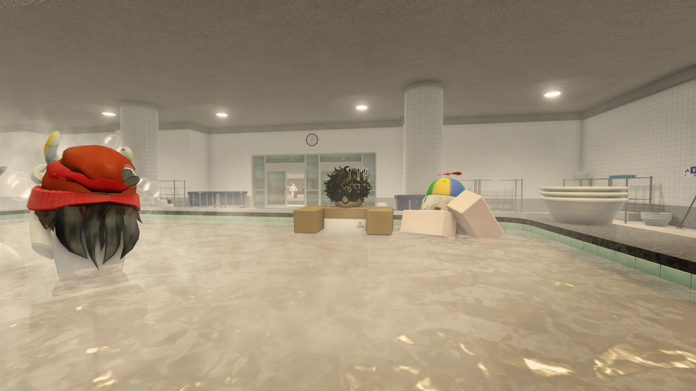
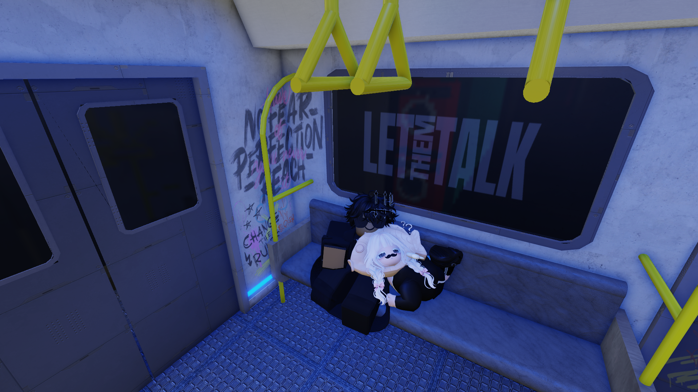
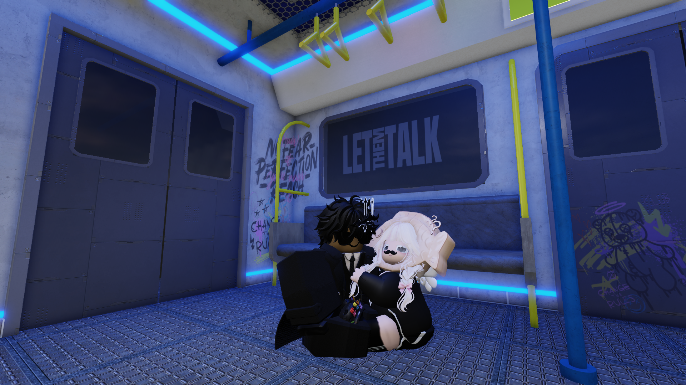
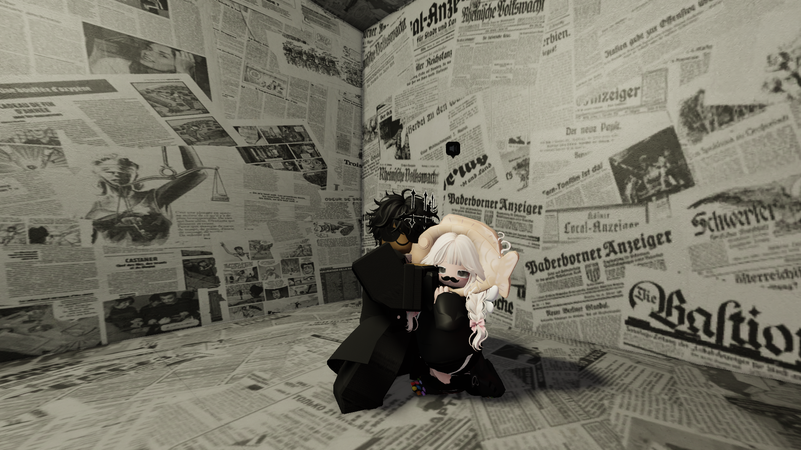

for the one i miss most
For you, my baby bear.
I made this little universe because my heart keeps coming back to you.
swipe / click next
page 01
Distance is just a number trying too hard.
I still look for you in small parts of my day: in songs, in late-night messages, and in the quiet seconds before your name lights up my screen.
page 02
I keep the little moments close.
Not because every photo is perfect, but because every version of you gives me one more reason to smile first.




page 03
I like you even when loving from far away is not easy.
I like the way you show up. The way you turn an ordinary day into something warmer. The way your name makes every notification feel different.
last page
So... can I be the person who loves you a little more seriously?
From far away for now, until one day the distance becomes a memory.